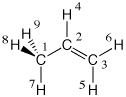

#P Becke3LYP/6-31G(d) scf=tight formcheck Becke3LYP/6-31G(d) propene orbitals with formcheck 0 1 C1 C2 1 r2 C3 2 r3 1 a3 H4 2 r4 3 a4 1 180.0 H5 3 r5 2 a5 1 0.0 H6 3 r6 2 a6 1 180.0 H7 1 r7 2 a7 4 180.0 H8 1 r8 2 a8 7 d8 H9 1 r8 2 a8 7 -d8 r2=1.50202789 r3=1.33329189 r4=1.09120355 r5=1.08850227 r6=1.0867543 r7=1.09519909 r8=1.09844079 a3=125.26675669 a4=118.85584399 a5=121.66815687 a6=121.82450969 a7=111.53888081 a8=111.17619079 d8=120.72760178 |  |
last changes: 10.01.2007, HZ questions & comments to: zipse@cup.uni-muenchen.de